Weekend a Malosco (Val di Non) – 5-8 novembre 2026
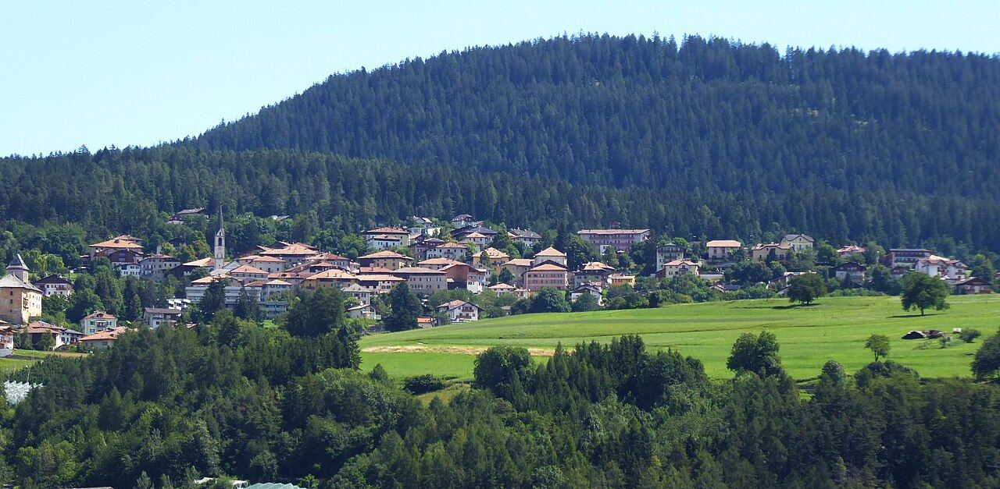
Piano preparato il 2 novembre 2026 con dati raccolti da cinque ricerche in parallelo e poi confrontati.
Il sito su GitHub: github.com/r-liciotti/malosco-carina
In breve
| Base | Malosco, alta Val di Non (circa 1.040 m), alloggio già prenotato |
| Date | da giovedì 5 a domenica 8 novembre 2026, 3 notti |
| Chi | coppia, in auto |
| Mete principali | Lago di Tovel · Santuario di San Romedio · Lago Smeraldo |
| In più | Canyon Rio Sass, Castel Valer, Castel Thun, belvedere della Mendola |
| Cena tipica di venerdì | Nerina, Malgolo di Romeno: segnalato dalla guida Michelin per il buon rapporto qualità-prezzo, a 10 minuti |
| Luce | alba 7:03 circa, tramonto 16:53 circa. Nelle valli strette la luce finisce verso le 16 |
Come sono organizzate le giornate
| Giorno | Mattina | Pomeriggio | Sera |
|---|---|---|---|
| Gio 5 | Viaggio | Lago Smeraldo + tramonto alla Mendola | Malosco |
| Ven 6 | Lago di Tovel | Cles / Lago di Santa Giustina (facoltativo) | Cena tipica da Nerina |
| Sab 7 | San Romedio a piedi da Sanzeno | Castel Valer (visita guidata) | Libera |
| Dom 8 | Canyon Rio Sass (visita guidata) | Castel Thun, poi rientro | Casa |
Alternative con una città: giovedì Bolzano all'andata, al posto del Lago Smeraldo (che passa a venerdì pomeriggio, al posto di Cles); domenica Trento al ritorno, al posto di Castel Thun. Si possono fare anche tutte e due. Dettagli nella sezione Bolzano e Trento.
Perché questo ordine:
- Tovel di venerdì: è il giorno con il meteo confermato bello, è un giorno feriale e senza caccia, e la strada potrebbe chiudere da un giorno all'altro con la prima neve.
- Lago Smeraldo già giovedì: è a 10 minuti da Malosco, quindi resta tempo per le tre mete richieste.
- Castel Valer sabato e Castel Thun domenica: entrambi a novembre aprono solo nel weekend.
⚠️ Prima di partire: telefonate da fare il 4-5 novembre
- APT Val di Non, 0463 830133: chiedere se la strada SP14 per Tovel è aperta e come funziona il parcheggio, se il Museo Retico è aperto e se c'è una festa di San Martino a Castel Thun. In più prenotare Castel Valer (sabato alle 15:00).
- Cooperativa Smeraldo, 0463 850000 (smeraldo@fondo.it): prenotare il Canyon Rio Sass per domenica alle 10:00. La prenotazione è obbligatoria e il canyon chiude il 15 novembre.
- Santuario di San Romedio, 0463 536198: chiedere se il "sentiero nella roccia" da Sanzeno è aperto o chiuso per ghiaccio.
- Nerina, 0463 510111: prenotare la cena di venerdì alle 19:30. Accettano prenotazioni solo per telefono e l'ultima comanda è alle 20:30.
- All'hotel: chiedere se rilascia la Trentino Guest Card. Con la card Castel Thun e il Museo Retico sono gratuiti e il Rio Sass ha il 20% di sconto.
File
- itinerary.md: giorno per giorno, con orari, motivazioni e piani B
- food_guide.md: piatti tipici, cena di venerdì, pranzi, prodotti da portare a casa
- citta.md: Bolzano e Trento, le alternative di giovedì e domenica
- dove_mangiare.md: ristoranti di cucina tipica e bar per la colazione
- quick_reference.md: numeri e orari in una pagina
- sources/bibliography.md: tutte le fonti
Non c'è il file
hotel_recommendations.mdprevisto dallo schema standard, perché l'alloggio è già prenotato.
Cosa non è stato possibile confermare
- Se la strada per Tovel è aperta dal 5 all'8 novembre (probabile, non certo).
- Il tratto del giro del lago di Tovel chiuso per lavori (avviso del Parco senza date).
- Se il sentiero nella roccia di San Romedio è aperto.
- Le ferie autunnali dei ristoranti: si risolve con le telefonate di prenotazione.
- Il meteo di sabato e domenica.
- Le distanze e i tempi locali sono stime (±10%).
Mappa dell'itinerario
Le tappe di ogni giornata, numerate nell'ordine del programma, con partenza e rientro a Malosco. Le linee collegano le tappe in linea d'aria: non sono il percorso stradale, per quello usate il navigatore.
- Gio 5: 1 Lago Smeraldo e Burrone di Fondo → 2 Passo della Mendola / belvedere del Penegal
- Ven 6: 1 Lago di Tovel → 2 Cles e Lago di Santa Giustina → 3 Cena da Nerina, Malgolo di Romeno
- Sab 7: 1 Sanzeno, Museo Retico (partenza del sentiero) → 2 Santuario di San Romedio → 3 Castel Valer, Tassullo
- Dom 8: 1 Canyon Rio Sass, Fondo → 2 Castel Thun, Vigo di Ton → 3 Casello A22 San Michele all'Adige, rientro
Coordinate da Wikidata, Wikipedia e OpenStreetMap, consultati il 2 novembre 2026. Per Nerina e per il casello di San Michele il punto indica il paese, non l'indirizzo esatto. Mappa © contributori di OpenStreetMap.
Itinerario – Val di Non, 5-8 novembre 2026
Base: Malosco. Le distanze sono stime (±10%). Luce utile all'aperto: dalle 10 alle 15:30-16. Tramonto alle 16:53 circa.
Giovedì 5 novembre – arrivo e Lago Smeraldo
Naviga la giornataVedi sulla mappa2 tappe in auto, da Malosco e ritorno
Mattina: viaggio. Pranzo a Malosco o a Fondo.
14:30-15:45 · Lago Smeraldo e Burrone di Fondo — Consigliato (una delle tre mete richieste)
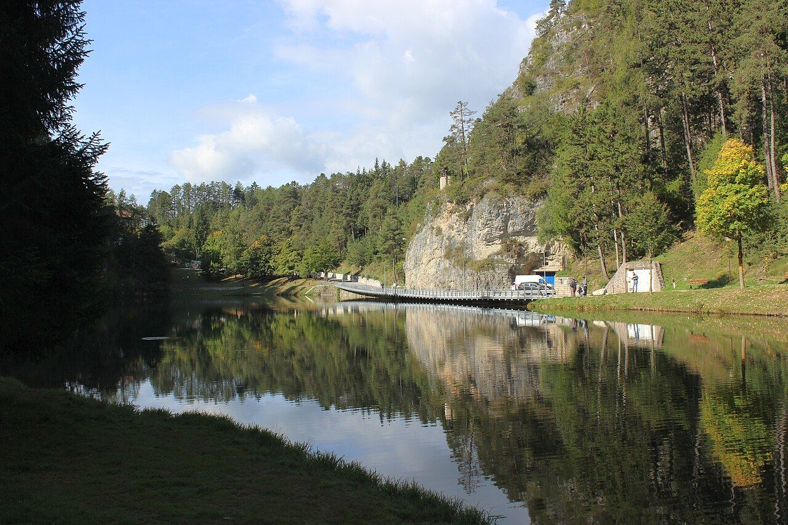
- Perché oggi: è a circa 5 km e 10 minuti da Malosco. È una passeggiata facile, adatta al giorno di arrivo, e così venerdì e sabato restano liberi per Tovel e San Romedio.
- Cosa fare: il giro del lago richiede circa 30 minuti ed è pianeggiante. Il lago è un piccolo bacino artificiale del 1965 sul Rio Sass, a circa 1.000 m, in una conca di bosco. Si può aggiungere il sentiero "Al Burrone" dal centro di Fondo: circa 1 km, poco più di mezz'ora, con passerelle e scale, passando dal vecchio mulino e dal ponte romano. Per vedere il lago dall'alto c'è il Sentiero dell'Erica, un anello nel bosco.
- Parcheggio: gratuito, al lago.
- Attenzione:
- Dopo le 15 il lago è quasi tutto in ombra: andateci appena finito il pranzo.
- Con il ghiaccio le scale del Burrone diventano scivolose.
- Evitate il Sentiero del Mondino: il tratto tra Dovena e il lago è segnalato come non percorribile.
16:00-17:10 · Tramonto al Passo della Mendola / belvedere del Penegal — Consigliato
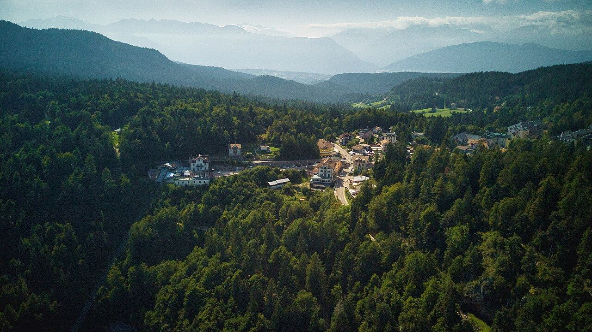
- Perché: sono circa 8 km e 15 minuti. Dal belvedere (1.737 m) si vedono la Val d'Adige, Bolzano e le Dolomiti a est. Al tramonto le montagne diventano rosa (si chiama enrosadira).
- Costo: gratuito.
- Non verificato: se la strada del Penegal è aperta a novembre. Se è chiusa, fermatevi al Passo della Mendola oppure fate una breve passeggiata ai prati di larici delle Regole di Malosco (circa 1.320 m).
Sera: a Malosco. Ricordate di confermare la prenotazione da Nerina per venerdì.
Alternativa · Bolzano all'andata, al posto del Lago Smeraldo — Facoltativo
- L'idea: invece di uscire dalla A22 a San Michele all'Adige, proseguite fino a Bolzano Sud (circa 20 minuti in più). Pranzate in città, visitate il museo di Ötzi e il centro, poi salite a Malosco passando dal Passo della Mendola, giusto in tempo per il tramonto. In tutto il viaggio si allunga di circa mezz'ora.
- Perché giovedì: è un giorno feriale. Il mercato di Piazza delle Erbe e i negozi sono aperti, mentre sabato pomeriggio e domenica in gran parte no. Il museo di Ötzi è aperto da martedì a domenica.
- Orari indicativi:
- 12:00 parcheggio Bolzano Centro;
- 12:15-13:15 pranzo;
- 13:20-14:50 museo di Ötzi;
- 14:55-15:35 giro a piedi del centro;
- 15:45 partenza da Bolzano;
- verso le 16:35 Passo della Mendola, con il tramonto alle 16:53;
- verso le 17:30 arrivo a Malosco.
- Cosa fare in città: il giro a piedi e il pranzo sono nella sezione Bolzano e Trento.
- Cosa cambia: il Lago Smeraldo passa a venerdì pomeriggio, al posto di Cles e del Lago di Santa Giustina (vedi venerdì).
- Attenzione:
- Avvisate l'alloggio che arrivate verso le 17:30 invece che a pranzo.
- Da Bolzano a Malosco sono circa 36 km di tornanti: contate 50-55 minuti. L'ultimo tratto, dopo il tramonto, è al buio.
- In città lasciate le valigie nel bagagliaio, non in vista.
- Navigazione: Naviga l'alternativa (da dove siete al parcheggio di Bolzano, poi Mendola e Malosco).
Venerdì 6 novembre – Lago di Tovel
Naviga la giornataVedi sulla mappa3 tappe in auto, da Malosco e ritorno
Il meteo previsto è sole e tempo stabile. È anche giorno di silenzio venatorio, cioè non si caccia: il giorno migliore per Tovel.
9:00 partenza → 10:15 circa arrivo · Lago di Tovel — Da non perdere
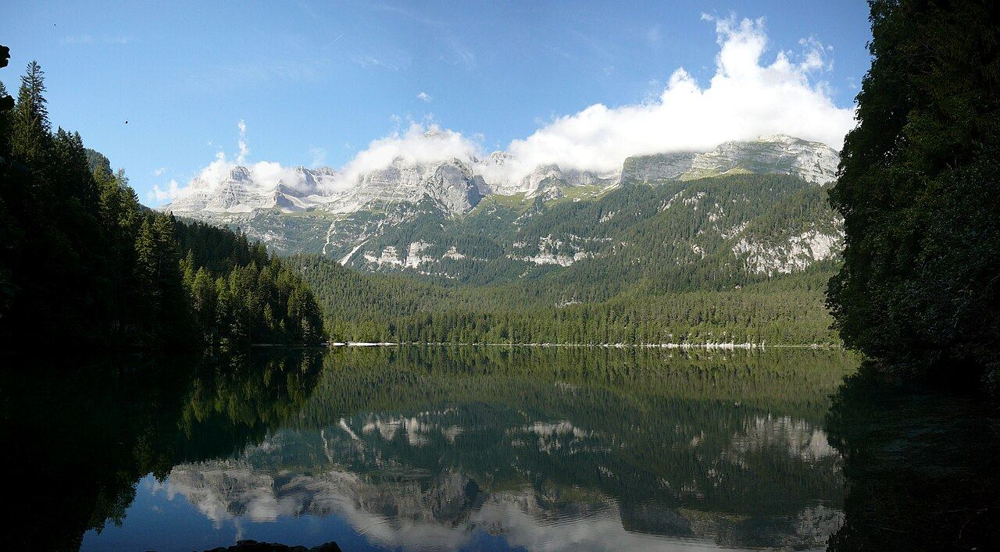
- Perché: è il lago simbolo della valle, l'ex "Lago Rosso" del Parco Adamello Brenta, con il gruppo del Brenta alle spalle. A novembre non c'è folla e i larici possono essere ancora dorati.
- Strada: Malosco → Fondo → Cles → Tuenno sono circa 30 km e 35-40 minuti. Poi la SP14 da Tuenno al lago, 14 km e circa 25 minuti, passando dalla nuova galleria paramassi aperta il 1° luglio 2026. In tutto circa 45 km, 1 ora-1 ora e 10.
- Accesso: il periodo con parcheggi a pagamento e navetta è finito il 1° novembre. Dopo quella data la strada di solito resta aperta senza servizi fino alla prima neve (chiusura abituale dal 15 novembre al 30 aprile). Va confermato con l'APT (vedi il README).
- Il giro del lago: circa 3,5-4 km, quasi pianeggiante, 45-90 minuti, con qualche gradino nella roccia.
- ⚠️ Il Parco segnala chiuso per lavori il tratto tra la cascata del Rislà e l'emissario del Tresegna, senza date. Il giro completo potrebbe non essere possibile: in quel caso fate andata e ritorno dalla parte aperta.
- Orario: sul lago, dalle 10:30 alle 12:30-13:00. Il sole arriva sul lago solo verso mezzogiorno.
- Servizi: nessuno. Chalet e Casa del Parco sono chiusi e il cellulare prende pochissimo. Portate un pranzo al sacco e un thermos.
- Attenzione: possono esserci ghiaccio e brina sulle rive in ombra. Valutate dei ramponcini. Il parcheggio dovrebbe essere gratuito o senza controlli, ma non è confermato: tenete qualche moneta.
Piano B, se la strada è chiusa: a piedi dal parcheggio Capriolo ci vogliono 2-2 ore e mezza solo per salire, troppo. In quel caso:
- venerdì mattina andate al Canyon Rio Sass alle 10:00 (prenotatelo per venerdì invece che per domenica) e il pomeriggio a San Romedio in auto;
- sabato tenete il programma (sentiero nella roccia e Castel Valer) oppure fate le Regole di Malosco e il Penegal a piedi.
14:00-16:30 · Cles e Lago di Santa Giustina — Facoltativo
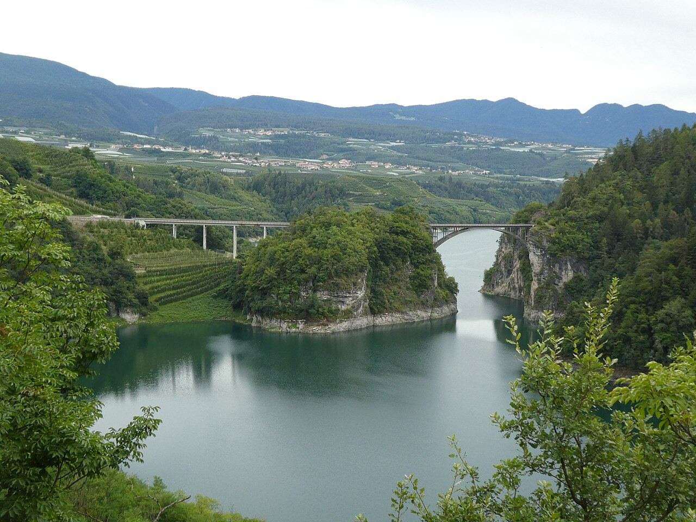
- Perché: è sulla strada del ritorno. Si può prendere un caffè nel centro di Cles e vedere la diga di Santa Giustina tra i meleti. Dura 1-2 ore ed è gratuito.
- Alternativa più comoda: rientrate a Malosco a riposare prima di cena.
- Altra alternativa: MondoMelinda a Segno: negozio aperto 9-13 e 15-19. Per novembre i tour delle celle sotterranee non sono confermati: chiedete all'APT.
- Se giovedì avete scelto Bolzano: al posto di Cles fate qui il Lago Smeraldo. Rientrando da Tovel passate da Fondo e fate il giro del lago dalle 14:30 alle 15:45, con le stesse indicazioni di giovedì. Poi riposo a Malosco prima di cena.
19:30 · Cena tipica da Nerina, Malgolo di Romeno
Circa 10 minuti da Malosco. Prenotazione per telefono obbligatoria: 0463 510111. I dettagli e le alternative sono in food_guide.md.
Sabato 7 novembre – San Romedio e un castello
Naviga la giornataVedi sulla mappa3 tappe in auto, da Malosco e ritorno
9:15-13:00 · Santuario di San Romedio a piedi da Sanzeno — Da non perdere
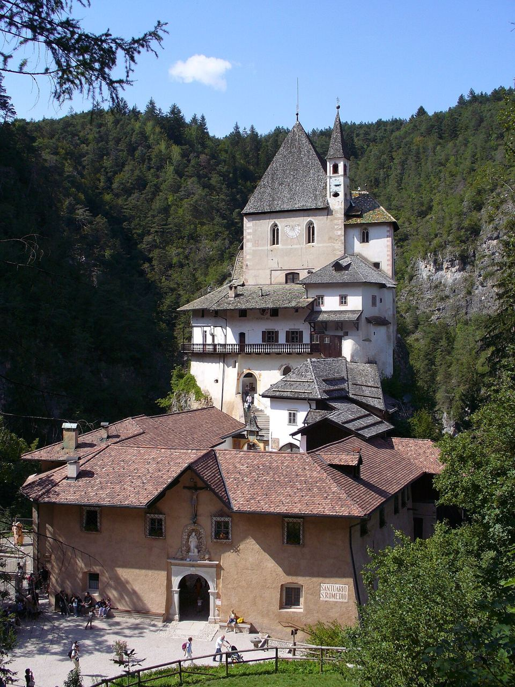
- Perché: è il santuario eremitico più scenografico del Trentino. Cinque chiese costruite una sopra l'altra su uno sperone di roccia, collegate da 131 gradini, con il recinto dell'orso legato alla leggenda di Romedio.
- Strada: Malosco → Sanzeno sono circa 17 km e 25 minuti. Parcheggiate al Museo Retico, in via Rezia 87 (circa 7,50 € al giorno secondo recensioni), oppure vicino al campo sportivo (pare gratuito).
- Il "sentiero nella roccia": segue un'antica canaletta per l'irrigazione scavata nella parete della gola, con corrimano di legno e alcuni tratti con il soffitto basso. Ci vuole circa 1 ora per tratto, con poca salita: in tutto circa 2 ore e mezza, visita compresa.
- Santuario: aperto tutti i giorni dalle 9:00 alle 17:30, ingresso gratuito con offerta libera. I cani non sono ammessi.
- Orso: a novembre è probabile che stia nella tana. Non contateci.
- Attenzione: in inverno il sentiero viene chiuso se c'è ghiaccio. Chiedete al santuario il giorno prima.
- Piano B: salite in auto da Sanzeno per la strada stretta (circa 3 km) fino al parcheggio ai piedi del santuario, poi pochi minuti a piedi. In alternativa: a piedi da Coredo, passando dai laghetti di Coredo e Tavon (circa 45 minuti).
Pranzo: a Sanzeno. Osteria Casa de Gentili (0463 424136) apre dal venerdì alla domenica: è la più apprezzata della zona.
15:00 · Castel Valer, Tassullo – visita guidata — Consigliato
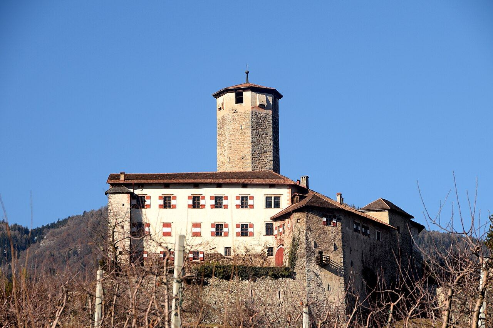
- Perché: è uno dei castelli più belli del Trentino, ancora abitato. Si visita solo con guida. Da Sanzeno sono circa 15 minuti.
- Orari a novembre: sabato e domenica alle 10:00 e alle 15:00. Prenotazione obbligatoria allo 0463 830133. Arrivate 15 minuti prima.
- Costo: 15 € a persona (19 € con Castel Nanno). Dura circa 1 ora e 15.
- Alternativa: il Museo Retico di Sanzeno (3,50-4 €, gratuito con la Guest Card). L'apertura a novembre non è confermata: telefonate allo 0463 434125.
Sera: libera. Se volete un'altra cena tipica, ci sono Locanda Alpina a Brez e Alle Ciaspole a Tret (vedi la guida gastronomica).
Domenica 8 novembre – Canyon e rientro
Naviga la giornataVedi sulla mappa3 tappe in auto, da Malosco fino all'A22
10:00-12:00 · Canyon Rio Sass, Fondo – visita guidata — Da non perdere (in più rispetto alle tre mete)
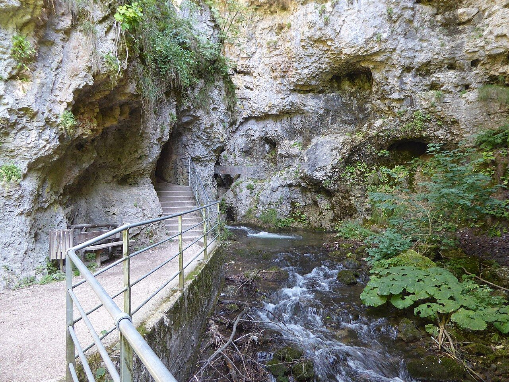
- Perché: è una gola stretta e profonda che passa sotto il paese di Fondo, a 10 minuti da Malosco. Si percorre su passerelle e scalette. È lo stesso torrente che forma il Lago Smeraldo.
- Dati: circa 2,5 km, circa 1.200 gradini, circa 145 m di dislivello, circa 2 ore.
- Aperto fino al 15 novembre. Si visita solo con guida e va prenotato: 0463 850000, smeraldo@fondo.it. Il ritrovo è alla Cooperativa Smeraldo, piazza San Giovanni 9, Fondo, 10 minuti prima.
- Costo: 12 € a persona (–20% con la Guest Card).
- Attenzione: dentro fa freddo e c'è umidità. Servono uno strato in più e scarpe che non scivolano. Con maltempo forte la visita può essere annullata.
Pranzo: a Fondo, per esempio all'Hotel Ristorante Lago Smeraldo, oppure Alle Ciaspole a Tret (pranzo 12-14).
14:00-15:30 · Castel Thun, Vigo di Ton — Consigliato, sulla strada di casa
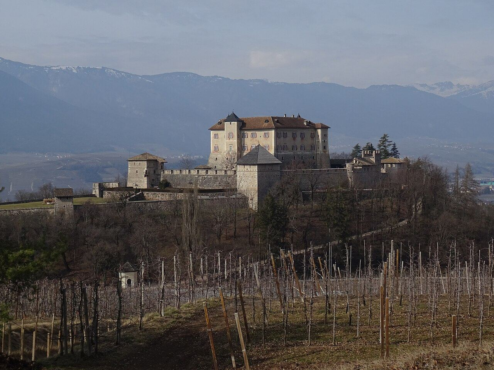
- Perché: è un grande castello-museo arredato, sulla discesa verso l'A22, quindi non allunga il viaggio. Da Fondo sono circa 40 km e 45 minuti.
- Orari: dal 2 novembre al 18 dicembre apre solo sabato e domenica, 9:30-17:00.
- Costo: 8 € a persona, audioguida 2,50 €. Gratuito con la Guest Card.
- Possibile evento: nel 2025 il castello ha ospitato una festa di San Martino la domenica successiva all'11 novembre. Per il 2026 non è confermata: chiedete a eventi@buonconsiglio.it.
15:30 · Partenza per casa. Il casello A22 di San Michele all'Adige è a circa 15 minuti.
Alternativa · Trento al ritorno, al posto di Castel Thun — Facoltativo
- L'idea: finito il Rio Sass, scendete direttamente a Trento (circa 50 km, 55 minuti). Pranzate in centro, visitate il Castello del Buonconsiglio e fate un giro a piedi, poi entrate in A22 a Trento Centro. Il rientro non si allunga: da Trento verso sud si risparmia il tratto da San Michele.
- Perché domenica: il Castello e i musei sono aperti e chiudono il lunedì. Si cambia un castello con un altro castello, più importante, e in più c'è la città.
- Orari indicativi:
- 12:00 partenza da Fondo, appena finito il canyon;
- verso le 12:55 parcheggio all'Autosilo Buonconsiglio;
- 13:00-14:15 pranzo;
- 14:20-15:50 Castello del Buonconsiglio;
- 15:50-16:50 giro a piedi del centro;
- verso le 17:05 partenza per casa.
- Cosa fare in città: il giro a piedi e il pranzo sono nella sezione Bolzano e Trento.
- Cosa si toglie: Castel Thun e il pranzo a Fondo.
- Attenzione:
- La domenica i negozi del centro sono in gran parte chiusi.
- Il mercatino di Natale apre solo il 20 novembre.
- Navigazione: Naviga l'alternativa (da dove siete all'Autosilo Buonconsiglio).
Classifica dei luoghi
| Luogo | Giudizio | Perché |
|---|---|---|
| Lago di Tovel | Da non perdere | Il simbolo della valle; senza folla in bassa stagione. Dipende dalla strada. |
| San Romedio | Da non perdere | Unico nel suo genere, aperto tutto l'anno, raggiungibile anche in auto. |
| Canyon Rio Sass | Da non perdere | Ci si va con ogni tempo ed è aperto fino al 15/11. |
| Lago Smeraldo | Consigliato | Piccolo ma vicinissimo e grazioso. |
| Castel Valer | Consigliato | Visita guidata di qualità (15 €). |
| Castel Thun | Consigliato | Sulla strada del ritorno. |
| Mendola / Penegal | Consigliato | Il tramonto migliore nei dintorni. |
| Museo Retico | Facoltativo | Interessante ma di nicchia, apertura incerta. |
| Cles e Santa Giustina | Facoltativo | Sosta di passaggio. |
| Parco Fluviale Novella | Sconsigliato | Probabilmente già chiuso per la stagione. |
Fotografia
| Punto | Ora migliore | Note |
|---|---|---|
| Tovel, riva nord con il Brenta dietro | 11:00-13:00 | È l'unica finestra di sole sul lago. Riflessi migliori senza vento. |
| San Romedio, le chiese viste dal basso (ultimo tratto del sentiero) | 11:30-13:30 | La gola è in ombra a lungo, la luce diffusa aiuta. |
| Sentiero nella roccia | Qualsiasi ora | Usate il grandangolo. |
| Lago Smeraldo | 13:30-14:30 | Prima che vada in ombra. Vista dall'alto dal Sentiero dell'Erica. |
| Penegal / Mendola | 16:30-17:05 | Montagne rosa e luci di Bolzano. Portate il teleobiettivo. |
| Castel Thun, viale d'ingresso | 14:00-15:00 | Luce bassa da sud-ovest. |
| Meleti tra Coredo e Sanzeno | 15:00-16:00 | Luce calda e bassa. |
Bolzano e Trento: cosa fare
Due mezze giornate in alternativa al programma in valle: Bolzano giovedì 5 all'andata, Trento domenica 8 al ritorno. Si possono fare anche tutte e due. Dati raccolti il 4 novembre 2026; i tempi a piedi sono stime.
Mercatini di Natale: non sono ancora aperti. Trento apre il 20 novembre, Bolzano il 26 novembre.
Bolzano · giovedì 5 novembre, 12:00-15:45
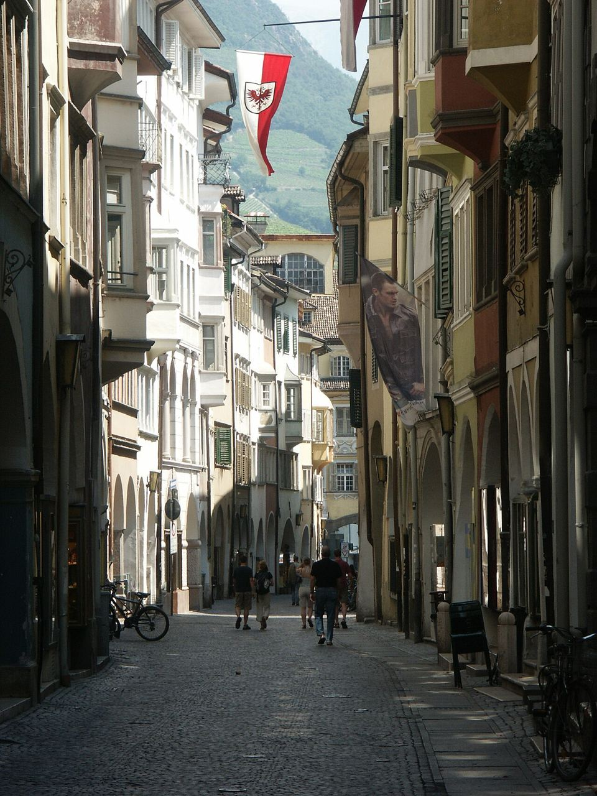
Parcheggio e pranzo
- Parcheggio Bolzano Centro (Parkhaus Bozen Mitte, vicino alla stazione): 2 € l'ora di giorno, massimo 20 € al giorno. Le tariffe del centro sono aumentate nel 2026: verificate sul posto. Più caro e più centrale il parcheggio di Piazza Walther (4 € la prima ora).
- Pranzo da Vögele, via Goethe 3, accanto a Piazza delle Erbe · tel. 0471 973938 · Consigliato
- Trattoria storica sudtirolese con il Bib Gourmand della Guida Michelin, fascia "€€".
- Piatti: canederli, speck, carne salada, testina, strudel.
- Aperta lunedì-venerdì 9:00-23:00, chiusa la domenica. Meglio prenotare.
- In alternativa: Cavallino Bianco (Weißes Rössl), via Bottai 6, tel. 0471 973267, trattoria di famiglia con canederli allo speck e Wiener Schnitzel. Non prende prenotazioni e gli orari non sono confermati: arrivate presto.
Il giro a piedi, in ordine
- Museo Archeologico dell'Alto Adige (Ötzi), via Museo 43 · Da non perdere
- Il museo dell'uomo venuto dal ghiaccio, la mummia di 5.300 anni trovata nel 1991 al Similaun, con i suoi vestiti e attrezzi.
- Da martedì a domenica 10:00-18:00, ultimo ingresso 17:30. Intero 13 €, ridotto 10 €.
- Circa 1 ora e mezza. Si può prenotare online per evitare la coda.
- Passeggiata del Talvera · Facoltativo: i prati lungo il torrente, a 200 m dal museo, con vista sulle montagne. 10-15 minuti.
- Piazza delle Erbe e la sua fontana del Nettuno · Consigliato: il mercato storico di frutta, verdura, speck e formaggi, aperto nei giorni feriali fino alle 19. 10-15 minuti.
- Chiesa dei Francescani · Facoltativo: chiostro del Trecento con affreschi e un altare in legno intagliato. Lunedì-sabato 10:00-17:30, gratis. 15 minuti.
- Via dei Portici (Laubengasse) · Consigliato: la via medievale dei commerci, tutta sotto i portici. È il posto per gli acquisti. 15-20 minuti.
- Chiesa dei Domenicani · Consigliato: nella Cappella di San Giovanni ci sono affreschi di scuola giottesca della prima metà del Trecento. Tutti i giorni 7:00-19:00, gratis (orario da confermare). 15-20 minuti.
- Duomo di Bolzano e Piazza Walther · Consigliato: il duomo gotico con il tetto di tegole colorate e, accanto, la piazza principale con la statua del poeta Walther von der Vogelweide. Duomo lunedì-sabato 7:30-18:00, gratis. 15-25 minuti in tutto.
Dalla piazza al parcheggio sono circa 450 m. In tutto si camminano 2,5-3 km.
Da comprare
- Speck Alto Adige IGP, sottovuoto per il viaggio.
- Schüttelbrot, il pane croccante di segale, e lo strudel di mele.
- Dove:
- Pur Südtirol, via della Mostra 3a, a due passi da Piazza Walther: prodotti di piccoli produttori locali, aperto nei giorni feriali circa 9:00-19:30 (orario non ufficiale).
- Franziskaner Bäckerei, via Francescani 3: forno storico. Il pomeriggio potrebbe essere chiuso.
Da sapere
- Castel Roncolo (affreschi medievali, aperto fino alle 17) è bello ma richiede circa 2 ore in più: in questa mezza giornata non ci sta.
- La funivia del Renon chiude per revisione dall'8 al 24 novembre: giovedì funziona, ma non c'è il tempo.
Trento · domenica 8 novembre, 13:00-17:00
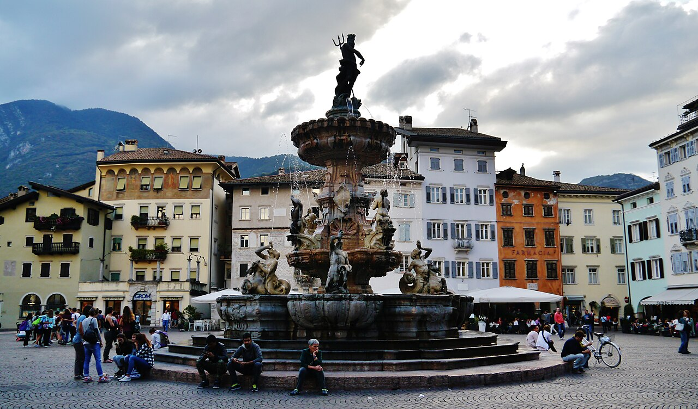
Parcheggio e pranzo
- Autosilo Buonconsiglio, via Petrarca 1/5 · Consigliato
- Aperto sempre, 500 posti. La domenica costa 0,80 € l'ora, quindi circa 3,20 € per 4 ore.
- È a 6 minuti a piedi dal Castello e a 12 minuti da Piazza Duomo.
- Il casello A22 di Trento Centro è a 3 minuti.
- Pranzo all'Antica Trattoria Due Mori, via San Marco 11, tra il parcheggio e il Castello · tel. 0461 984251 · Consigliato
- Osteria Tipica Trentina, aperta da martedì a domenica, pranzo 12:00-14:15.
- La prenotazione è obbligatoria.
Il giro a piedi, in ordine
- Castello del Buonconsiglio · Da non perdere
- La residenza dei principi vescovi di Trento: il Castelvecchio medievale, il Magno Palazzo rinascimentale e la loggia con la vista sulla città.
- Da martedì a domenica 9:30-17:00. Intero 10 €, con la Trentino Guest Card circa 7 € (-30%).
- Circa 1 ora e mezza.
- Torre Aquila e il Ciclo dei Mesi · Consigliato
- Gli affreschi dei dodici mesi, del 1400 circa: la vita di nobili e contadini nel Trentino medievale.
- Si visita a orari fissi con il personale del Castello, a numero chiuso. Costa 2,50 € in più, e il biglietto del Castello va preso almeno 45 minuti prima.
- Prenotate per telefono entro venerdì 6 (0461 492811, lunedì-venerdì 9-13 e 14-16).
- 20-30 minuti.
- Via Manci · Consigliato: la via dei palazzi rinascimentali tra il Castello e il centro. 10 minuti.
- Via Belenzani · Consigliato: palazzi con le facciate affrescate, tra cui Palazzo Geremia. 10-15 minuti.
- Piazza Duomo · Da non perdere: la piazza principale, con la fontana del Nettuno del Settecento e le Case Cazuffi-Rella dipinte. 15 minuti.
- Duomo di San Vigilio · Consigliato: la cattedrale romanica dove si tenne il Concilio di Trento. Ingresso gratuito, niente visite durante le messe. L'orario pomeridiano non coincide tra le fonti (dalle 14:30 fino alle 18 o alle 20). 20 minuti.
Se avete più tempo
- S.A.S.S., Spazio Archeologico Sotterraneo del Sas, sotto piazza Cesare Battisti · Facoltativo
- Le strade e le case della Trento romana.
- Aperto da martedì a domenica, ma l'orario non coincide tra le fonti (9:30-18, oppure con una pausa 13-14). Circa 2,50 €.
- 30-40 minuti, in alternativa al Duomo. Tel. 0461 230171.
- Funivia Trento-Sardagna · Facoltativo: in pochi minuti porta al belvedere sopra la città. Orari e prezzi non confermati (tel. 0461 821000). Serve circa un'ora in più.
- Torre Vanga: torre del Duecento vicino all'Adige. Si vede da fuori.
Da sapere
- Negozi: la domenica quelli del centro sono in gran parte chiusi.
- Centro storico: è zona a traffico limitato con telecamere. Lasciate l'auto all'Autosilo.
- Concerto: domenica sera c'è un concerto al Centro Santa Chiara, ma vi riguarda solo se restate in città.
Guida gastronomica – Val di Non
Piatti tipici
- Tortèl di patate: il piatto simbolo della valle. È una frittella di patate crude grattugiate, fritta in padella, servita su un vassoio da dividere con salumi, lucanica, formaggi, crauti e fagioli con la cipolla. Esiste anche la versione dolce con mirtilli rossi.
- Mortandela affumicata della Val di Non: polpette schiacciate di carne di maiale con spezie, affumicate con faggio e ginepro. Si mangia di solito con il tortèl. Nota: lo stato di Presidio Slow Food è controverso; secondo L'Adige è stato sospeso.
- Canederli: gnocchi di pane con speck o formaggio, in brodo o asciutti. Si mangiano in tutto il Trentino.
- Strangolapreti: gnocchetti di pane e spinaci con burro fuso. Poi polenta con lucanica, funghi o selvaggina, carne salada e strudel di mele.
- Formaggi: il Trentingrana e il Nostrano del Casèl (anche del Caseificio di Romeno, fondato nel 1873), il Casolét e il Puzzone di Moena.
- Mela Val di Non DOP (Melinda): conservata in celle ricavate in un'ex miniera, a 300 m di profondità.
- Da bere: il Groppello di Revò, un rosso locale prodotto in pochissime bottiglie, il Teroldego, il Trento DOC e la grappa trentina per chiudere.
Cena tipica di venerdì 6 novembre
🥇 Nerina – Malgolo di Romeno (consigliato)
- Dove: via De Gasperi 31, Malgolo di Romeno, circa 10 minuti da Malosco.
- Perché: è l'unico locale con l'apertura del venerdì sera confermata da due fonti (il sito della guida Michelin e quello del locale). La guida Michelin lo segnala per il buon rapporto qualità-prezzo (fascia "€"). È un albergo-ristorante di famiglia dal 1969, con cucina nonesa vera e propria.
- Cosa ordinare: salumi nonesi, gnocchi di mais spin con mortandela e fonduta di Casolét, canederli con fonduta di Puzzone di Moena.
- Orari: cena 19:00-20:30, chiuso il martedì.
- Prenotazione: solo per telefono, 0463 510111 (info@albergonerina.it). Chiamate già il 3-4 novembre per sapere anche se sono in ferie, e riconfermate venerdì mattina.
- Spesa indicativa: 35-45 € a persona alla carta.
Alternative, in ordine
| # | Locale | Dove | Venerdì sera | Note |
|---|---|---|---|---|
| 2 | Locanda Alpina | piazza Municipio 23, Brez (15-20 min) | Aperto 19:00-21:00 (dato Michelin) | Segnalato dalla guida Michelin, fascia "€€". Della stessa famiglia dal 1933: gnocchi di patate crude, selvaggina, strudel. Tel. 0463 874396 |
| 3 | Alle Ciaspole | località Plazze 4, Tret di Fondo (15 min) | Probabilmente aperto, 19:30-21:00 | Segnalato dalla guida Michelin, fascia "€€". Ingredienti a km 0, manzo Grigio Alpina, guanciale al Teroldego. Tel. 0463 880117 / 338 4695375 |
| 4 | Osteria Casa de Gentili | piazza di Sanzeno (20-25 min) | Probabilmente aperta, ma solo ven-dom | Voto 4,9 su circa 935 recensioni, tortèl e Groppello, 30-40 €. Tel. 0463 424136 |
| 5 | Agritur Mas da la Val | Maso Molini 19, Ruffrè-Mendola (10-15 min) | Non verificato | Prodotti dell'azienda, polenta, formaggi di malga. Tel. 0463 870029 |
Da escludere venerdì sera:
- La Monteson: a novembre probabilmente chiusa.
- Al Dosarel: apre solo a pranzo.
- Il Falchetto: solo sabato e domenica, dato vecchio.
- Rifugi e malghe: chiusi per la stagione.
Pranzi lungo il percorso
- Venerdì, Tovel: pranzo al sacco, perché al lago è tutto chiuso. In alternativa, al rientro, Al Capriolo o l'Albergo Tuenno a Tuenno (orari non verificati), oppure Nerina a pranzo (12:00-13:30).
- Sabato, Sanzeno: Osteria Casa de Gentili, aperta dal venerdì alla domenica. Altri posti in paese: Anaunia, Le Plaze, Bar alla Fontana.
- Domenica, Fondo: Hotel Ristorante Lago Smeraldo (sala in legno con vista sul lago), Pizzeria Al Folon, oppure Alle Ciaspole a Tret (12-14).
- Per risparmiare: un tagliere con speck, mele e formaggi del caseificio costa circa 10-12 € a persona.
Prodotti da portare a casa
-
MondoMelinda, via della Cooperazione 21, Segno: negozio aperto da martedì a domenica, 9-13 e 15-19, tel. 0463 671101. I tour vanno prenotati allo 0463 830133:
- 15 €: "Il mondo dietro una mela";
- 22 €: le celle sotterranee;
- 30 €: i due tour insieme. Il calendario di novembre non è confermato.
-
Mortandela:
- Macelleria Fratelli Corrà, Smarano (0463 536160);
- Dal Massimo Goloso, Coredo (0463 536129).
- Formaggi: Caseificio Sociale di Romeno, via alla Piena 62 (0463 875177).
- Groppello: cantina El Zeremia a Revò, con visite su prenotazione.
Consigli
- Prenotate sempre per telefono. In bassa stagione molti locali aprono la cucina in base alle prenotazioni.
- Si cena presto: arrivate entro le 19:30-20:00.
- Il coperto (2-4 €) è normale. La mancia non è obbligatoria: si arrotonda.
- Il tortèl si mangia dal vassoio in centro tavola. Come vino locale chiedete il Groppello.
- Al ritorno in auto le strade possono gelare la sera: tenetene conto anche per il vino.
Dove mangiare: cucina tipica e colazione
Ristoranti scelti solo se fanno cucina tipica trentina e nonesa, più una piccola lista di bar e pasticcerie per la colazione. Ricerca del 2 novembre 2026.
Attenzione: novembre è bassa stagione e nessun locale pubblica online le ferie autunnali 2026. Gli stati qui sotto valgono per gli orari settimanali: telefonate prima di andare per escludere chiusure per ferie. I tempi in auto da Malosco sono stime, non calcolati con un navigatore.
Ristoranti di cucina tipica
Nerina, Malgolo di Romeno
- Dove: Via De Gasperi 31, Malgolo · tel. 0463 510111 · circa 12–15 min in auto
- Cucina: trattoria di famiglia dal 1969: salumi nonesi, ciuìga con rape, gnocchi di mais Spin con mortandela e fonduta di casolèt, canederli con fonduta di puzzone di Moena
- Prezzo: fascia Michelin "€", Bib Gourmand (Guida Michelin, letta il 2/11/2026); a persona circa 30–45 € (approssimativo, stima)
- Orari: pranzo 12:00–13:30, cena 19:00–20:30 · chiuso il martedì
- 5–8 novembre: probabile, "aperto tutto l'anno" secondo Visit Val di Non · prenotare per telefono
- Fonti: Guida Michelin · Visit Val di Non
Locanda Alpina, Brez
- Dove: Piazza Municipio 23, Brez · tel. 0463 874396 · circa 15 min in auto
- Cucina: trentina, nonesa e tirolese in un edificio dell'Ottocento: gnocchi di patate crude con pancetta croccante e ricotta affumicata, selvaggina, strudel
- Prezzo: fascia Michelin "€€", cucina regionale (Guida Michelin, letta il 2/11/2026)
- Orari: lunedì solo pranzo · martedì chiuso · mercoledì–domenica pranzo e cena (cena dalle 19:00)
- 5–8 novembre: probabile, da confermare · prenotazione consigliata
- Fonti: Guida Michelin · locandalpina.it
Alle Ciaspole, Tret (Borgo d'Anaunia)
- Dove: Tret, sulla strada del Passo Palade · tel. 0463 880117 / 338 4695375 · circa 15 min in auto
- Cucina: km 0: manzo di razza Grigio Alpina, salmerino, formaggi locali, selvaggina, pane e pasta con grano coltivato tra Amblar e Cavareno
- Prezzo: fascia Michelin "€€", nella guida dal 2021 (letta il 2/11/2026)
- Orari: pranzo 12:00–14:00, cena 19:30–21:00 · chiuso il martedì
- 5–8 novembre: da confermare per telefono
- Fonti: Guida Michelin · alleciaspole.it
Al Dosarel, Seio di Sarnonico
- Dove: Via 25 Aprile 7/B, Seio · tel. 339 8255040 · circa 5 min in auto
- Cucina: ricette di famiglia nelle cantine di casa Ziller, oltre 300 anni; tortel di patate con salumi e formaggi
- Prezzo: menù tortel circa 20 € bevande escluse (approssimativo, una sola fonte)
- Orari: durante la rassegna Tortèl&Gropèl 2026 il tortel era servito venerdì, sabato e domenica a pranzo; orari normali non trovati
- 5–8 novembre: da confermare per telefono
- Fonti: Visit Val di Non · Visit Val di Non (2)
Osteria Casa de Gentili, Sanzeno
- Dove: cortile di Casa de' Gentili, piazza di Sanzeno · cell. 348 4273235 · circa 25 min in auto, comoda il sabato di San Romedio
- Cucina: osteria ed enoteca; tortel di patate
- Prezzo: circa 30–40 € a persona (approssimativo, recensione su RestaurantGuru)
- Valutazione: RestaurantGuru 4,8 su quasi 1.000 voti (data non indicata)
- Orari: probabilmente solo venerdì, sabato e domenica
- 5–8 novembre: da confermare per telefono
- Fonti: Visit Val di Non · RestaurantGuru
Alla Pineta, Tavon di Predaia
- Dove: Via al Santuario 17, Tavon · tel. 0463 536866 · circa 30 min in auto, sulla strada per Castel Thun
- Cucina: marchio "Osteria Tipica Trentina" dal 2003, ricette trentine della famiglia Sicher
- Valutazione: Gambero Rosso 81/100 (2025)
- Orari e 5–8 novembre: non trovati, da confermare per telefono
- Fonti: Visit Val di Non · Gambero Rosso
Ristorante Centrale, Flavon
- Dove: Via Nazionale 39, Flavon · tel. 0461 652178 · circa 40–45 min in auto, vicino a Castel Thun (domenica)
- Cucina: ristorante-pizzeria con tortel di patate (anche senza glutine), mortandela, orzotto, risotto al Teroldego, strudel
- Orari: tutti i giorni, pranzo 12:00–15:00, cena 18:00–23:00 (sito ufficiale)
- 5–8 novembre: probabile · prenotare nel fine settimana
- Fonti: centraleflavon.it · Visit Val di Non
Chiusi o da evitare in queste date
- Il Falchetto, Regole di Malosco: chiuso ogni anno dal 2 novembre al 3 dicembre · fonte: Visit Val di Non
- La Monteson, Regole di Malosco: apre solo fino al 1° novembre · fonte: Visit Val di Non
- Agritur Mas da la Val, Ruffrè: giorni di apertura del ristorante non pubblicati, solo dopo una telefonata (0463 870029)
Colazione tipica: i bar migliori
Nessun bar della zona documenta online una colazione "di malga" (yogurt, formaggi, confetture, mele della valle): per quella chiedete anche alla vostra struttura a Malosco.
Peccato di Gola, Fondo
- Dove: Via Cesare Battisti 17, Fondo · tel. 0463 835169 · circa 5 min in auto
- Cosa prendere: torte fatte in casa (lodata quella pere, cioccolato e noci), brioche, cappuccino
- Valutazione: Google 4,6 (183 voti), TripAdvisor 4,5 (92), via RestaurantGuru, agosto 2026
- Orari: martedì–sabato 8:00–13:00 e 15:00–19:00, domenica 8:00–12:15 · chiuso il lunedì
- Fonte: RestaurantGuru
F.lli Borzaga, Cavareno
- Dove: Piazza Giovanni Prati 30, Cavareno · tel. 0463 831355 · circa 8–10 min in auto
- Cosa prendere: panificio-pasticceria con strudel, brioche e torta nera (da confermare sul posto)
- Valutazione: Google 4,6 (549 voti), via RestaurantGuru, ottobre 2026
- Orari: martedì–sabato 7:00–13:00 e 15:30–19:30, domenica 7:00–12:30 · chiuso il lunedì
- Fonte: RestaurantGuru
Pasticceria Ramus, Cles
- Dove: Via Roma 10, Cles, dal 1962, con sala da tè · tel. 0463 421771 · circa 30 min, comoda il venerdì verso Tovel
- Cosa prendere: lo strudel di mele, l'unico lodato in recensioni vere
- Valutazione: Google 4,0 (398 voti), recensioni miste sul servizio
- Orari: lunedì–sabato 7:30–12:30 e 15:00–19:00, domenica 7:30–12:30
- Fonti: RestaurantGuru · Sluurpy
Le Goloserie, Cles
- Dove: Via G. Marconi 62, Cles · tel. 0463 421179 · circa 30 min in auto
- Cosa prendere: croissant a lievito madre e caffè di specialità: pasticceria artigianale moderna più che tipica
- Orari ufficiali (19/09/2026–31/01/2027): lunedì–venerdì 6:30–19:30, sabato 6:30–13:00, domenica 6:30–12:00 · aperto nei giorni del viaggio
- Fonte: Outdooractive (APT)
Dal Gran al Pan, Sarnonico
- Dove: Via Cesare Battisti 15, Sarnonico · tel. 379 195 8405 · circa 5 min in auto
- Cosa prendere: forno da asporto, senza bar: pane e dolci con farine proprie macinate nel loro mulino, compreso il grano saraceno
- Orari ufficiali (02/10/2026–31/03/2027): lunedì–sabato 7:00–12:00, venerdì e sabato anche 16:00–19:00 · domenica 8 novembre probabilmente chiuso
- Fonte: Outdooractive (APT)
Promemoria – Val di Non, 5-8 novembre 2026
Emergenze
| Emergenze (soccorso, soccorso alpino, forze dell'ordine) | 112 |
| Guardia medica (assistenza non urgente, 24 ore su 24) | 116117 |
| Pronto soccorso: Ospedale Valli del Noce, viale Degasperi, Cles | 0463 660111 |
| Grandi carnivori (orsi) | 800 903606 |
| Farmacia a Fondo | Diemme Farma, via Cesare Battisti 20 (per i turni chiamate il 116117) |
Telefonate e prenotazioni
| Chi | Numero | Per cosa |
|---|---|---|
| APT Val di Non, via Roma 21, Fondo | 0463 830133 · info@visitvaldinon.it | Strada per Tovel, prenotazione di Castel Valer, Museo Retico, Melinda, eventi |
| Parco Adamello Brenta | 0465 806666 (centralino) · 0465 806616 (mobilità) | Strada e parcheggio di Tovel |
| Cooperativa Smeraldo (Canyon Rio Sass) | 0463 850000 · smeraldo@fondo.it | Prenotazione per domenica alle 10:00 |
| Santuario di San Romedio | 0463 536198 | Sentiero nella roccia aperto? |
| Nerina (cena di venerdì) | 0463 510111 | Prenotazione alle 19:30 |
| Locanda Alpina, Brez | 0463 874396 | Cena alternativa |
| Alle Ciaspole, Tret | 0463 880117 | Cena o pranzo alternativo |
| Casa de Gentili, Sanzeno | 0463 424136 | Pranzo di sabato |
| Museo Retico | 0463 434125 | Orari |
| Vögele, Bolzano | 0471 973938 | Pranzo di giovedì, solo con l'alternativa Bolzano |
| Antica Trattoria Due Mori, Trento | 0461 984251 | Prenotazione obbligatoria per il pranzo di domenica, solo con l'alternativa Trento |
| Castello del Buonconsiglio, servizi educativi | 0461 492811 (lun-ven 9-13 e 14-16) | Visita alla Torre Aquila di domenica: chiamare entro venerdì 6 |
| Il vostro alloggio | Con l'alternativa Bolzano: arrivo verso le 17:30 invece che a pranzo |
Orari importanti
| Alba / tramonto | 07:03 / 16:53 circa. All'auto entro le 16:00 nelle valli |
| San Romedio | tutti i giorni 9:00-17:30 |
| Castel Valer | sab-dom 10:00 e 15:00, solo su prenotazione |
| Castel Thun | solo sab-dom, 9:30-17:00 |
| Canyon Rio Sass | fino al 15/11, partenze 10:00 e 14:00 |
| Nerina | cena 19:00-20:30, chiuso il martedì |
| MondoMelinda (negozio) | mar-dom 9-13 e 15-19 |
| Caccia | venerdì 6 non si caccia · giovedì, sabato e domenica sì |
| Museo di Ötzi, Bolzano | mar-dom 10:00-18:00 |
| Castello del Buonconsiglio, Trento | mar-dom 9:30-17:00 |
In una riga
- Gio: Lago Smeraldo (parcheggio gratuito) → tramonto alla Mendola.
- Ven: Tovel (pranzo al sacco, niente campo) → cena da Nerina.
- Sab: San Romedio da Sanzeno → Castel Valer alle 15:00.
- Dom: Rio Sass alle 10:00 → Castel Thun → A22 da San Michele.
- Alternative: giovedì Bolzano all'andata (il Lago Smeraldo passa a venerdì); domenica Trento al ritorno al posto di Castel Thun.
Da non dimenticare
- Gomme invernali o catene
- Una frontale a testa
- Thermos
- Ramponcini
- Contanti e monete
- Capo arancione
- GeoResQ installata
- Mappe offline
App
- Viaggiare in Trentino (strade e webcam)
- Meteotrentino
- autobrennero.it
- GeoResQ
Fonti (consultate il 2 novembre 2026)
Lago di Tovel e strada SP14
- https://www.visitvaldinon.it/en/poi/tovel-parking-in-autumn
- https://book.pnab.it/en/parking-lot/val-tovel
- https://siviaggia.it/notizie/lago-tovel-trentino-torna-accessibile-estate-2026/592260/
- https://www.italiabsolutely.com/news/cities-regions/lake-tovel-reopens-to-the-public-when-to-go-and-how-to-get-there
- https://www.ufficiostampa.provincia.tn.it/content/view/pdf/305571 (comunicato PAT n. 1956, galleria aperta il 1/7/2026)
- https://www.ufficiostampa.provincia.tn.it/layout/set/print/Comunicati/Strada-del-Lago-di-Tovel-inaugurata-la-nuova-galleria-paramassi
- https://www.ladige.it/territori/non-sole/tovel-inaugurata-la-nuova-galleria-paramassi-da-12-milioni-strada-piu-sicura-ky182hjp
- https://www.ufficiostampa.provincia.tn.it/Comunicati/Strada-di-Tovel-anticipata-l-apertura-continuativa-per-l-estate
- https://www.ufficiostampa.provincia.tn.it/Comunicati/Strada-di-Tovel-massima-attenzione-da-parte-della-Giunta-provinciale
- https://it.wikivoyage.org/wiki/Lago_di_Tovel
- https://in3giorni.com/faq/quando-riapre-la-strada-per-il-lago-di-tovel
- https://in3giorni.com/faq/quando-apre-la-strada-per-tovel
- https://in3giorni.com/faq/dove-parcheggiare-per-visitare-il-lago-di-tovel
- https://www.dolomiti.it/it/fiumi-laghi-cascate/lago-di-tovel
- https://visitvaldinon.it/en/poi/lake-tovel-useful-information
- https://www.iltrentinodeibambini.it/tovel-lago-delle-attivita-tutte-scoprire/
- https://www.cnr.it/en/eventi/allegato/13921
- https://www.pnab.it/it/utilita/avvisi (chiusura del tratto Rislà-Tresegna)
San Romedio e Sanzeno
- https://www.trentino.com/it/cultura-e-territorio/attrazioni/santuario-di-s-romedio/
- https://www.visittrentino.info/it/santuario-di-s.romedio_md_2567
- https://www.dolomiti.it/it/chiese-abbazie-e-santuari/santuario-di-san-romedio
- https://www.cultura.trentino.it/eng/Cultural-venues/All-cultural-venues/Sanctuary-of-Saint-Romedius
- https://www.trentino.com/it/sport-e-tempo-libero/montagne-ed-escursioni/escursioni-primaverili/da-sanzeno-a-san-romedio/
- https://www.montagnadiviaggi.it/2019/10/sentiero-nella-roccia-di-san-romedio-da-sanzeno.html
- https://www.viaggiapiccoli.com/trentino-la-passeggiata-al-santuario-di-san-romedio/
- https://www.iltrentinodeibambini.it/?p=38057
- https://www.ilturista.info/da-vedere/santuario-san-romedio-predaia/
- https://www.ladige.it/cronaca/il-benessere-dellorso-di-san-romedio-lucia-coppola-verdi-si-appella-a-diocesi-e-provincia-yptxxjff
- https://www.camperonline.it/area_di_sosta_dettaglio.asp?ID=24796 · https://park4night.com/en/place/58718 · https://park4night.com/en/place/359996
- https://www.trentino.com/it/cultura-e-territorio/musei-e-mostre/museo-retico/
- https://julian-alps.com/en/poi/museum/museo-retico/14690729/
- https://www.iltrentinodeibambini.it/?p=20937
Lago Smeraldo, Fondo e Canyon Rio Sass
- https://www.trentino.com/it/cultura-e-territorio/natura-e-paesaggio/laghi/lago-smeraldo/
- https://www.iltrentinodeibambini.it/la-passeggiata-al-burrone-del-lago-smeraldo/
- https://www.iltrentinodeibambini.it/a-picco-sul-lago-lorto-botanico-di-fondo/
- https://www.trentino.com/it/sport-e-tempo-libero/montagne-ed-escursioni/escursioni-estive/sentiero-del-mondino/
- https://www.camperonline.it/area_di_sosta_dettaglio.asp?ID=3045
- https://www.canyonriosass.it/
- https://www.visitvaldinon.it/it/poi/canyon-rio-sass · https://www.visitvaldinon.it/en/poi/rio-sass-canyon
- https://www.trentino.com/it/cultura-e-territorio/attrazioni/canyon-rio-sass/
- https://www.visittrentino.info/it/guida/natura/percorsi-nella-natura/canyon-rio-sass_md_2336
- https://www.suedtirolerland.it/it/cultura-e-territorio/natura-e-paesaggio/monumenti-naturali/canyon-rio-novella-e-canyon-rio-sass/
Castelli, Mendola e altro
- https://www.buonconsiglio.it/en/castel-thun/plan-your-visit/
- https://www.trentino.com/it/cultura-e-territorio/castelli/castel-thun/
- https://www.dolomiti.it/it/castelli-e-fortezze/castel-thun
- https://cultura.gov.it/luogo/castel-thun
- https://www.iltrentinodeibambini.it/eventi/festa-di-san-martino-castel-thun/
- https://www.dolomiti.it/it/castelli-e-fortezze/castello-di-valer
- https://www.trentino.com/it/cultura-e-territorio/castelli/castel-valer/
- https://www.visittrentino.info/anello-lungo-tra-regole-di-malosco-e-passo-mendola-con-salita-al-monte-penegal_tour_45736244
- https://www.trentino.com/it/sport-e-tempo-libero/montagne-ed-escursioni/escursioni-primaverili/ai-prati-delle-regole-di-malosco/
- https://www.visitvaldinon.it/en/poi/parco-fluviale-novella
- https://www.trentino.com/it/calendario/dettagli/il-mondo-dietro-una-mela/
- https://www.italia-italy.org/en/evt20565-eventi-predaia-festa-san-martino-vervo
Cucina e ristoranti
- https://guide.michelin.com/ch/it/trentino-alto-adige/romeno/ristorante/nerina
- https://guide.michelin.com/it/it/notizia/dining-out/bib-gourmand-nerina-il-meglio-del-trentino-nel-piatto
- https://www.albergonerina.it/pages/it/home.php
- https://guide.michelin.com/ch/it/trentino-alto-adige/brez/ristorante/locanda-alpina · https://www.locandalpina.it/ristorante.php
- https://guide.michelin.com/ch/it/trentino-alto-adige/fondo/ristorante/alle-ciaspole · https://www.alleciaspole.it
- https://www.visitvaldinon.it/en/tortel-gropel-a-typical-dinner-in-val-di-non
- https://restaurantguru.it/Sanzeno · https://restaurantguru.it/dinner-Sanzeno-m9623
- https://www.trentino.com/it/trentino/val-di-non/ruffre-mendola/hotel/agritur-mas-dala-val/
- https://agriturismo.it/en/farmhouse/trentino_alto_adige/trento/AgriturMasDeLaVal-5131928/restaurant.html
- https://www.iltrentinodeibambini.it/?p=10334
- https://visitvaldinon.it/en/-tortel-di-patate-the-val-di-non-s-famous-potato-cakes
- https://suedtirol.live/it/allogio/albergo-il-falchetto-sarnonico-p67029
- https://suedtirol.live/it/gastronomia/ristorante-pizzeria-al-capriolo-tuenno-p45236
- https://www.volagratis.com/hotel/italia/tuenno/albergo-tuenno_hid-363658
- https://visittrentino.info/en/taste/where-to-eat/ristorante-lago-rosso_md_84752292
- https://visittrentino.info/en/taste/where-to-eat/ristorante-mountain-chalet-tovel_md_84752287
- https://www.voyage-prive.it/ppl/vacanze-italia-fondo-hotel-lago-smeraldo/48648
- https://melinda.it/en/mondomelinda/
- https://pimcore.tastetrentino.it/en/products/mortandela-affumicata-della-val-di-non
- https://www.visittrentino.info/en/trentino/tourist-areas/smoked-mortandela-from-val-di-non_md_3494
- https://www.ladige.it/salute-e-benessere/mortandela-fino-a-londra-kz9ltm0d
- https://www.ladige.it/salute-e-benessere/stop-a-mortandela-e-luganega-salumi-sospesi-da-slow-food-a0gausp6
- https://www.ildolomiti.it/societa/2018/la-storia-della-mortandela-orgoglio-della-val-di-non
- https://www.tastetrentino.it/en/producers/caseificio-sociale-alta-val-di-non-romeno-cavareno-sca
- https://www.winetourism.com/it/azienda-vinicola/cantina-el-zeremia/
- https://www.trentino.com/it/calendario/dettagli/emozioni-di-groppello/
- https://www.visitvaldinon.it/en/groppello-the-heroic-grape-varietal-from-the-val-di-non
- https://www.montagnadiviaggi.it/2018/03/ricetta-tortel-di-patate-con-formaggio-vezzena.html
- https://www.scattidigusto.it/trentino-7-piatti-imperdibili
- https://visitvaldisole.it/it/eventi/magnamour-primavera
Trasporti e regole stradali
- https://www.ufficiostampa.provincia.tn.it/Comunicati/IN-VIGORE-LA-DISCIPLINA-DELLA-CIRCOLAZIONE-STRADALE-IN-PERIODO-INVERNALE
- https://www.ildolomiti.it/cronaca/2025/scatta-lobbligo-di-pneumatici-invernali-o-catene-a-bordo-ecco-cosa-comporta-e-cosa-si-rischia-anche-in-autostrada-in-caso-di-controllo
- https://www.sicurauto.it/news/codice-della-strada/strade-con-obbligo-pneumatici-invernali
- https://calcolopercorso.it/it/distanza/Milano/Mezzocorona (anche Verona, Bologna, Padova)
- https://www.unipolmove.it/calcola-pedaggio/Milano/Mezzocorona/
- https://www.telepass.com/it/privati/servizi/telepedaggio/a22-brennero-modena
- https://rechner-portal.de/reise-urlaub/transport/maut-italien-rechner
- https://www.ladige.it/cronaca/pedaggi-2026-in-trentino-alto-adige-rincari-lievi-ma-pesanti-per-i-pendolari-b3u9ycxt
- https://www.businessonline.it/news/pedaggi-autostradali-2026-gli-aumenti-ufficiali-calcoli-ed-esempi-costi-sui-tratti-principali_n81140.html
- https://www.suedtirol.info/it/informazioni/come-arrivare/in-macchina-in-alto-adige
- https://gascom2026.dista.uninsubria.it/local-info
- https://prix-carburant.eu/it/stations/borgo-d-anaunia
- https://www.borsaitaliana.it/borsa/notizie/teleborsa/economia/carburanti-prezzo-medio-self-benzina-a-2022-euroe-gasolio-a-2260-euro-63_2026-10-23_TLB.html?lang=it
- https://www.soldionline.it/?p=180350
- https://www.ilnordest.it/italia-ed-esteri/prezzo-gasolio-in-lieve-rialzo-a-2-259-euro-in-autostrada-a-2-294-vbbjdh6z
- https://www.provincia.tn.it/Argomenti/Mobilita-e-trasporti
- https://www.trentino.com/it/service/informazioni-sulla-viabilita/
- https://www.ufficiostampa.provincia.tn.it/Comunicati/Linea-ferroviaria-Trento-Male-Mezzana-interruzione-tra-Mezzolombardo-e-Cles
- https://www.rome2rio.com/Bus/Malosco/Cles
Meteo, sicurezza, fauna e regole
- https://www.meteotrentino.it/previsioni/bollettino-meteorologico-ufficiale-per-il-trentino/ (letto il 2/11/2026)
- https://www.meteotrentino.it/previsioni/tendenze-mensili/
- https://www.ufficiostampa.provincia.tn.it/content/view/pdf/291866
- https://www.ufficiostampa.provincia.tn.it/Comunicati/Novembre-2020-molto-piu-caldo-e-meno-piovoso-della-media
- https://api.sunrise-sunset.org/json?lat=46.437&lng=11.143&date=2026-11-06&tzid=Europe/Rome
- https://grandicarnivori.provincia.tn.it/
- https://www.ufficiostampa.provincia.tn.it/Comunicati/ORSO-LA-PROVINCIA-RICORDA-LE-REGOLE
- https://www.ilpost.it/2024/06/28/cosa-fare-se-incontri-un-orso/
- https://www.ladige.it/montagna/orsi-in-trentino-la-provincia-rilancia-la-campagna-informativa-ecco-come-comportarsi-in-caso-di-incontro-sk7qunx6
- https://www.ufficiostampa.provincia.tn.it/layout/set/print/Comunicati/Stagione-Venatoria-2026-2027-Approvate-le-nuove-disposizioni-e-limitazioni-tecniche
- https://www.ufficiostampa.provincia.tn.it/content/view/pdf/273543
- https://www.ladige.it/cronaca/caccia-al-via-domenica-7-settembre-la-stagione-venatoria-2025-2026-pept8fqh
- https://www.pnab.it/it/vivi-il-parco/consigli-e-regole
- https://www.pnab.it/it/ente/regolamenti-dell-ente · https://www.pnab.it/it/ente/regolamento-drone · https://www.pnab.it/it/ente/regolamento-funghi · https://www.pnab.it/it/ente/regolamento-caccia-e-pesca
- https://www.ildolomiti.it/montagna/2024/duecentomila-utenti-attivi-georesq-lapp-del-soccorso-alpino-e-del-cai-e-stata-ideata-da-due-trentini-il-vice-presidente-del-cnsas-molinu-in-22-casi-ha-salvato-delle-vite
- https://www.caicagliari.it/escursionismo/wp-content/uploads/sites/2/2024/02/GeoResQ-Istruzioni.pdf
- https://www.sportoutdoor24.it/?p=613253
- https://www.provincia.tn.it/content/download/20953/289452/file/Del_GP_1154_2019.pdf
- https://www.volpidelvajolet.it/2026/09/cosa-significano-i-numeri-sui-segnavia.html
- https://www.ufficiostampa.provincia.tn.it/Comunicati/Numero-unico-europeo-116117-oltre-240-mila-chiamate-nel-2025
- https://www.ufficiostampa.provincia.tn.it/content/view/pdf/224013
- https://www.qsalute.it/pronto-soccorso-ospedale-cles/ · https://www.torrinomedica.it/ospedali/cles/
- https://visitvaldinon.it/en/poi/ufficio-turistico-apt-fondo
- https://www.amministrazionicomunali.it/trentino-alto-adige/malosco/farmacie
- https://www.visitvaldinon.it/en/pomaria · https://www.viaggiando-italia.it/pomaria-2026-a-casez-la-festa-della-mela-e-del-raccolto-in-val-di-non/
- https://www.quotidiano.net/itinerari/trentino-alto-adige/val-di-non-autunno-mele-eventi-ncoeb4wd
- https://www.ufficiostampa.provincia.tn.it/content/view/pdf/289105
- https://www.iltrentinodeibambini.it/cosa-fare-oggi/settimana/2026-11-03/
Budget, imposte e card
- https://www.ufficiostampa.provincia.tn.it/content/download/30693/559217/file/impostadisoggiorno_guidaallimposta.pdf
- https://www.ladige.it/cronaca/tassa-di-soggiorno-tra-0-70-e-1-30-euro-o875q5be
- https://www.ufficiostampa.provincia.tn.it/content/view/pdf/33698
- https://www.momondo.it/hotel/malosco · https://www.skyscanner.com/hotels/italy/malosco-hotels/ci-45053988
- https://visitvaldinon.it/en/trentino-guest-card
- https://www.fondazioneatm.it/static/upload/ser/servizi-trentino-guest-card-primavera-2026.pdf
- https://www.finanza.com/finanza/dati-macroeconomici/stangata-caffe-spread-tazzina-prezzi
- https://www.ladige.it/economia/trento-seconda-in-italia-per-il-prezzo-del-caffe-al-bar-solo-bolzano-piu-cara-a723ywgc
Bolzano e Trento (consultate il 4 novembre 2026)
- https://www.iceman.it/it/il-museo/prezzi-orari
- https://www.suedtirolerland.it/it/cultura-e-territorio/musei-e-mostre/museo-archeologico-dell-alto-adige/
- https://www.suedtirol.info/it/it/esperienze-ed-eventi/eventi/mercatino-di-natale-di-bolzano
- https://www.bolzano-bozen.it/en/find-your-inspiration/city-guide-online-shopping/
- https://www.telepass.com/it/privati/servizi/parcheggi/bolzano
- https://guide.michelin.com/th/th/trentino-alto-adige/bolzano/restaurant/vogele
- https://www.gamberorossointernational.com/?p=514771
- http://www.dompfarre.bz.it/
- https://www.museionline.info/trentino-alto-adige-musei-monumenti/chiesa-dei-domenicani-bolzano
- https://museionline.info/trentino-alto-adige-musei-monumenti/chiesa-dei-francescani-bolzano
- https://www.runkelstein.info/visitor-info
- https://www.franziskanerbaeckerei.it/
- https://www.pursuedtirol.com/
- https://alto-adige.com/informazioni-utili/passi-di-montagna/passo-della-mendola
- https://meteo.provincia.bz.it/it/meteo-alto-adige
- https://www.trentino.com/it/cultura-e-territorio/castelli/castello-del-buonconsiglio/
- https://www.buonconsiglio.it/en/buy/
- https://www.visittrento.it/en/points-of-interest/torre-aquila-buonconsiglio-castle
- https://www.visittrento.it/en/useful-information/card-and-advantages/trentino-guest-card
- https://www.muse.it/home/pianifica-la-visita/
- https://natale.visittrento.it/mercatino
- https://www.trentinomobilita.it/servizi/comune/trento/parcheggi-in-struttura-trento/parcheggio-autosilo-buonconsiglio/
- https://tastetrentino.it/en/where-to-eat/antica-trattoria-due-mori
- https://www.museionline.info/comuni/duomo-di-trento
- https://www.museionline.info/tipologie-museo/spazio-archeologico-sotterraneo-del-sas
- https://www.visittrento.it/en/points-of-interest/the-sardagna-cable-car
- https://www.visittrento.it/en/points-of-interest/vanga-tower
- https://www.rome2rio.com/s/Malosco/Trento
- Tempi in auto e a piedi: OSRM (router.project-osrm.org, routing.openstreetmap.de), senza traffico
Crediti delle foto
Tutte le foto vengono da Wikimedia Commons e sono usate secondo la loro licenza libera. Le foto di TripAdvisor e Google Immagini sono solo collegate, non copiate.
- Malosco vista da Brez · Foto: Syrio, CC BY-SA 4.0, via Wikimedia Commons
- Lago Smeraldo, Fondo · Foto: ManfredK, CC BY-SA 4.0, via Wikimedia Commons
- Passo della Mendola · Foto: Daniel Reust, CC BY-SA 4.0, via Wikimedia Commons
- Lago di Tovel · Foto: Llorenzi, CC BY-SA 3.0, via Wikimedia Commons
- Lago di Santa Giustina · Foto: Syrio, CC BY-SA 4.0, via Wikimedia Commons
- Santuario di San Romedio · Foto: Rolandob, CC BY 3.0, via Wikimedia Commons
- Castel Valer · Foto: Cirolini P, CC0, via Wikimedia Commons
- Canyon Rio Sass · Foto: Syrio, CC BY-SA 4.0, via Wikimedia Commons
- Castel Thun · Foto: Syrio, CC BY-SA 4.0, via Wikimedia Commons
- Via dei Portici, Bolzano · Foto: Hubert Berberich (HubiB), CC BY 2.5, via Wikimedia Commons
- Piazza Duomo, Trento · Foto: Zairon, CC BY-SA 4.0, via Wikimedia Commons